Carpet: Service and Repair
Carpet ReplacementSpecial Tools Required
KTC trim tool set SOJATP2014 *
* Available through the American Honda Tool and Equipment Program
2-door
SRS components are located in this area. Review the SRS component locations and the precautions and procedures before doing repairs or service.
NOTE:
- Put on gloves to protect your hands.
- Use the appropriate tool from the KTC trim tool set to avoid damage when prying components.
- Take care not to damage, wrinkle or twist the carpet.
- Be careful not to damage the dashboard or other interior trim pieces.
1. Remove these items:
- Front seats, both sides
- Rear seat cushion
- Door sill trim, both sides
- Kick panels, both sides
- Driver's dashboard undercover
- Passenger's dashboard undercover
- Center console
- Steering joint cover
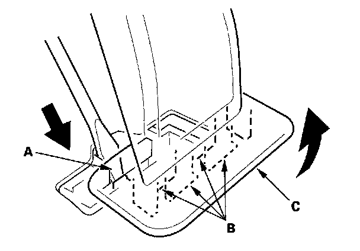
2. Push the knob (A) back to release the hooks (B) then pull up the accelerator pedal (C).
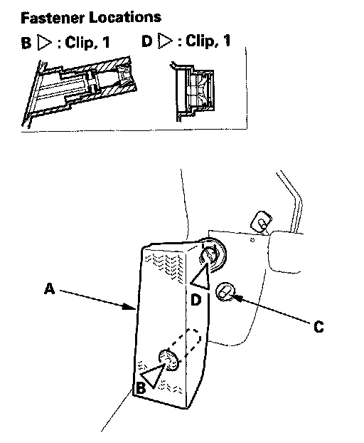
3. Remove the footrest (A).
1. Using a 6 mm hexagon socket wrench, remove the lower clip (B) from the stud bolt (C).
2. Using a flat-tip screwdriver, remove the upper clip (D) from the stud bolt.
4. Disconnect the parking brake cables from the equalizer.
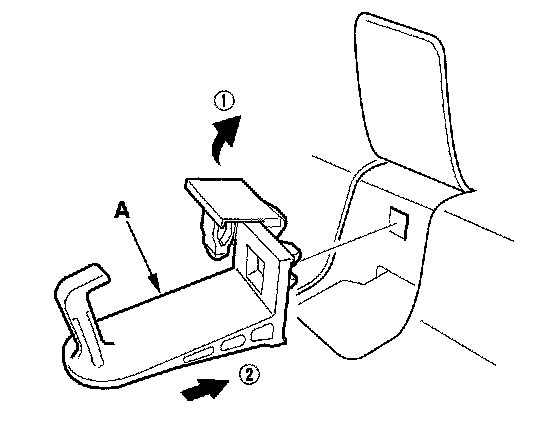
5. Remove the floor mat holders (A) from the driver's side.
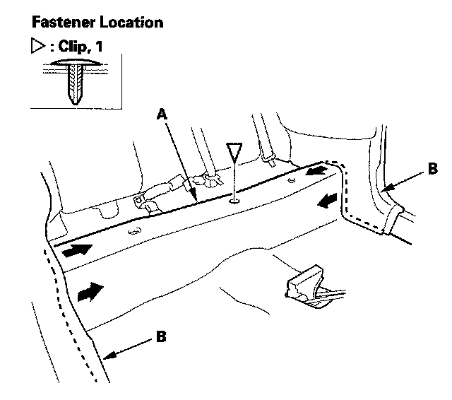
6. Release the clip from the rear portion of the carpet (A). Pull out the edge of the carpet from under both rear side trim panels (B).
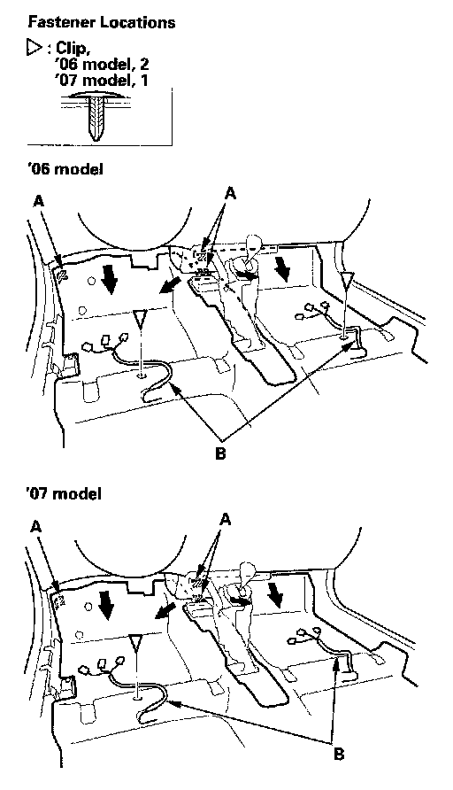
7. Release the clips. Release the velcro fasteners (A), then pull the carpet out from under the dashboard.
8. Pull the seat harnesses (B) out through the hole in the carpet, then remove the carpet.
9. Install the carpet in the reverse order of removal, and note these items:
- Take care not to damage, wrinkle or twist the carpet.
- Make sure the seat harnesses and parking brake cables are routed correctly.
- Check if the clips are damaged or stress-whitened, and if necessary, replace them with new ones.
- Push the velcro fasteners and clips into place securely.
- Slip the carpet under both rear side trim panels properly.
- Push the accelerator pedal hooks into place securely, and after installing, make sure the accelerator pedal does not come off the floor by pulling it up.
Special Tools Required
KTC trim tool set SOJATP2014 *
* Available through the American Honda Tool and Equipment Program
4-door
SRS components are located in this area. Review the SRS component locations and the precautions and procedures before doing repairs or service.
NOTE:
- Put on gloves to protect your hands.
- Use the appropriate tool from the KTC trim tool set to avoid damage when prying components.
- Take care not to damage, wrinkle or twist the carpet.
- Be careful not to damage the dashboard or other interior trim pieces.
1. Remove these items:
- Front seats, both sides
- Rear seat cushion
- Front door sill trim, both sides
- Rear door sill trim, both sides
- Kick panels, both sides
- B-pillar lower trim
- Driver's dashboard undercover
- Passenger's dashboard undercover
- Center console
- Steering joint cover
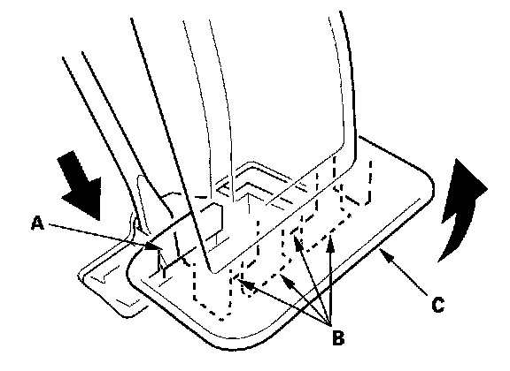
2. Push the knob (A) back to release the hooks (B) then pull up the accelerator pedal (C).
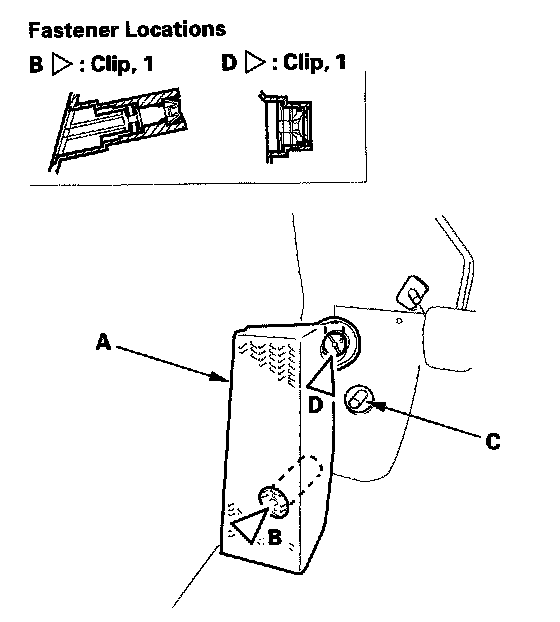
3. Remove the footrest (A).
1. Using a 6 mm hexagon socket wrench, remove the lower clip (B) from the stud bolt (C).
2. Using a flat-tip screwdriver, remove the upper clip (D) from the stud bolt.
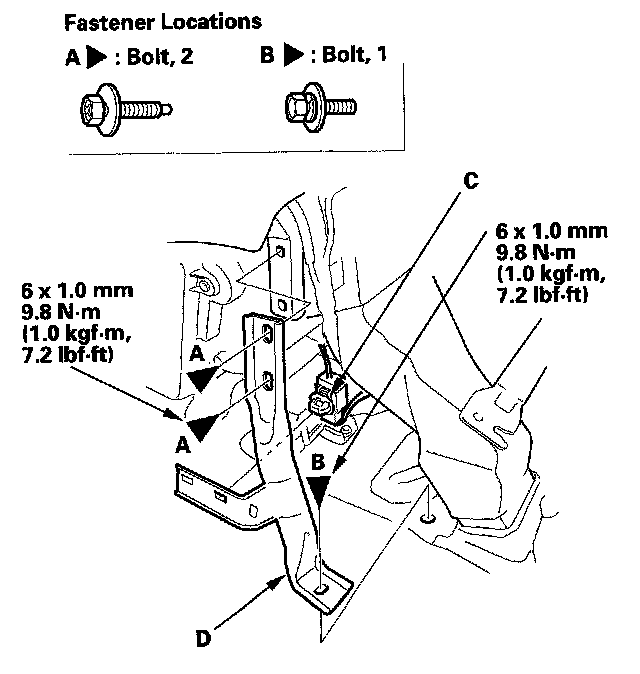
4. Remove the bolts (A, B), and detach the connector clip (C), then remove the center pipe extension (D).
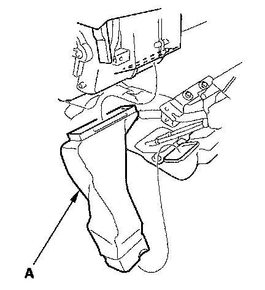
5. Remove the rear heater joint duct (A).
6. Disconnect the parking brake cables from the equalizer.
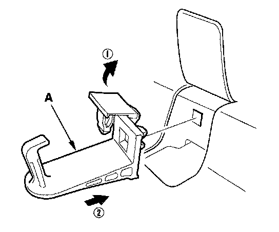
7. Remove the floor mat holders (A) from the driver's side.
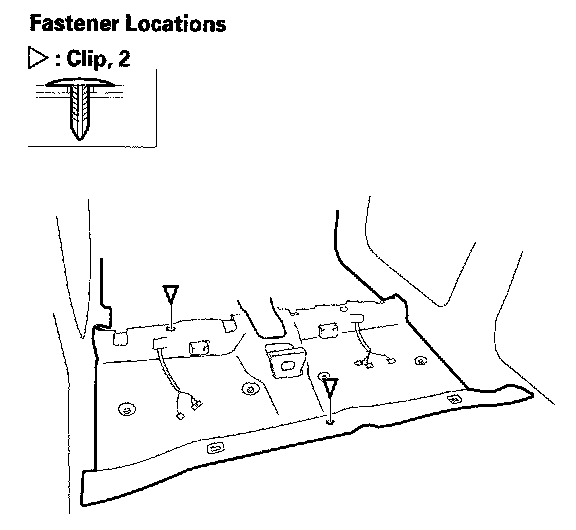
8. Remove the clips.
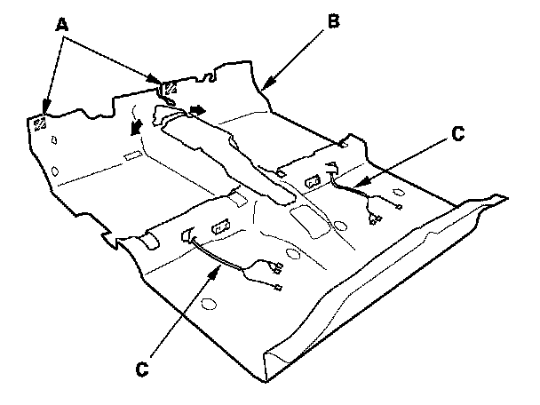
9. Release the velcro fasteners (A), then pull the carpet (B) out from under the dashboard.
10. Pull the seat harnesses (C) out through the hole in the carpet, then remove the carpet.
11. Install the carpet in the reverse order of removal, and note these items:
- Take care not to damage, wrinkle or twist the carpet.
- Make sure the seat harnesses and parking brake cables are routed correctly.
- Check if the clips are damaged or stress-whitened, and if necessary, replace them with new ones.
- Push the velcro fasteners and clips into place securely.
- Push the accelerator pedal hooks into place securely, and after installing, make sure the accelerator pedal does not come off the floor by pulling it up.